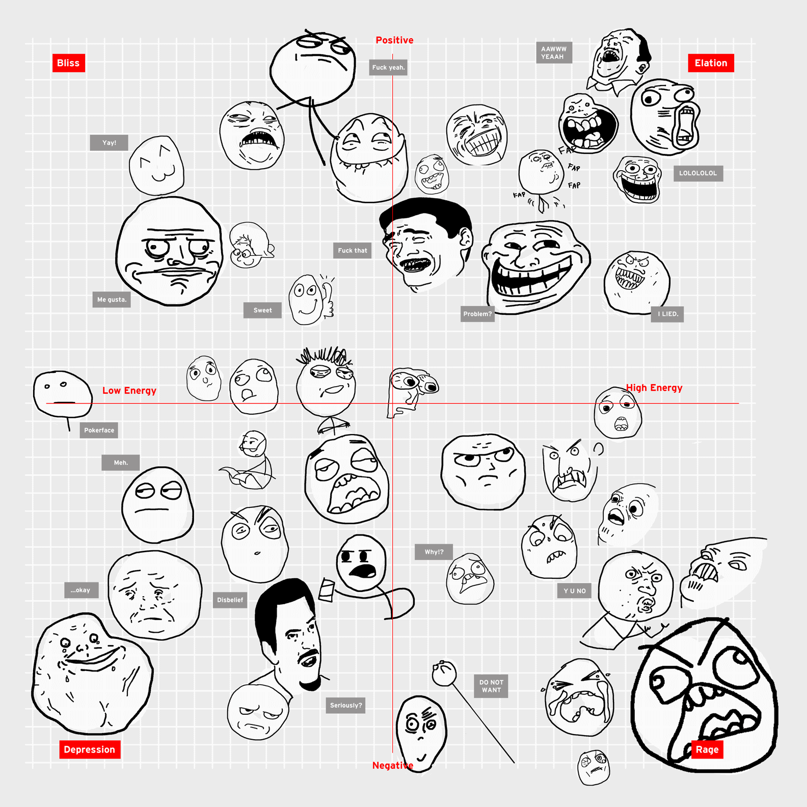
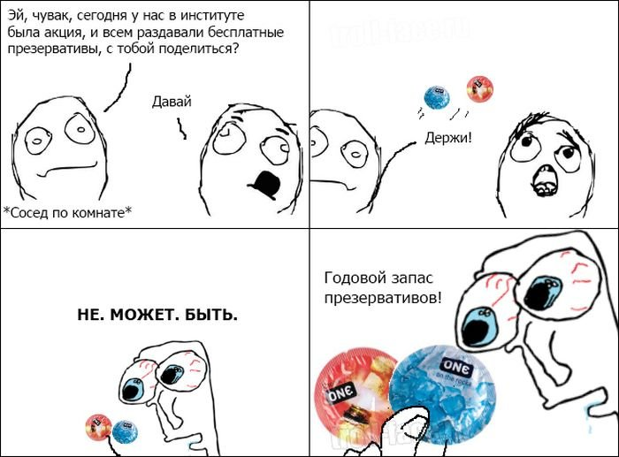
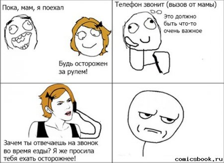
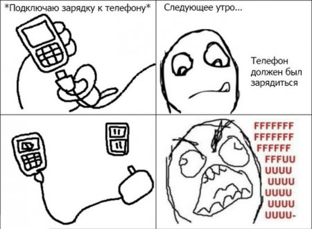

RAGE
Rage Comics (надм. Яростные комиксы) — серия веб-комиксов, персонажи которых нарисованы без внимания к деталям в простейшем графическом редакторе типа Paint. Сюжеты комиксов сильно различаются, в соответствии с воображением и жизненным опытом авторов комиксов. Появление первых любительских комиксов датируется 2008 годом. RAGE-комиксы в 2011 году стали безумно популярны Вконтакте, а посему окончательно превратились в попсу. Среднестатистический комикс содержит четыре кадра и рассказывает об обстоятельствах, приводящих к злобе или ярости (отсюда и название). Во всём многообразии.
Вообще, по сути, считать эти комиксы мемами - не совсем верно, что очевидно даже из их названия. Когда-то давным-давно, году в 2010 в каждый такой комикс создатель вкладывался по полной - почти каждый комикс становился шедевром. С распространением же средств для автоматического создания RAGE-комиксов и вообще популяризации данного феномена качество, что закономерно, упало.
По традиции, несколько представителей:    Жиза.